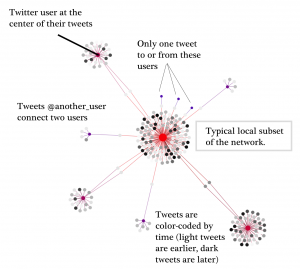
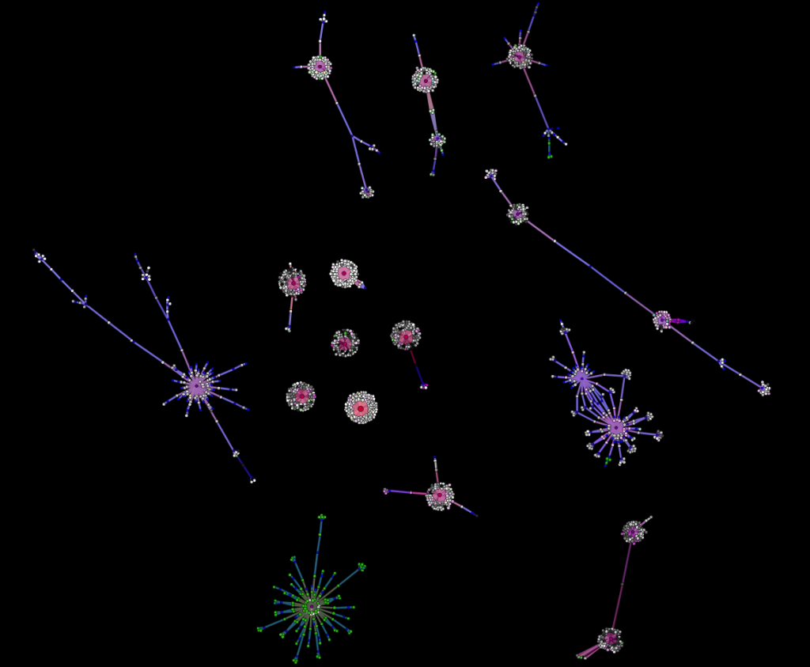
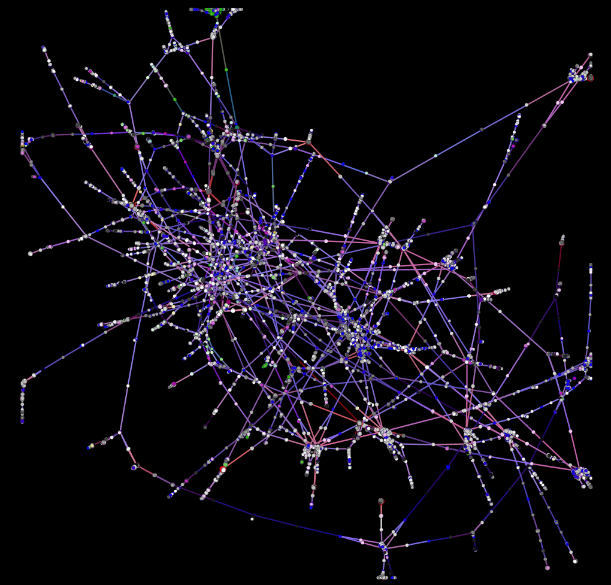
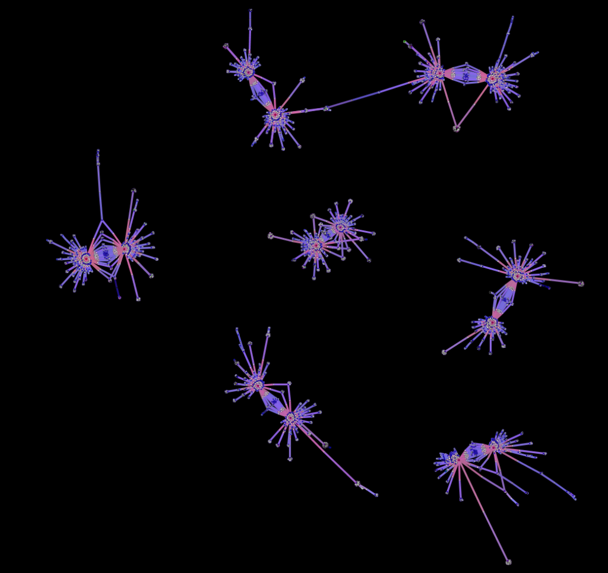
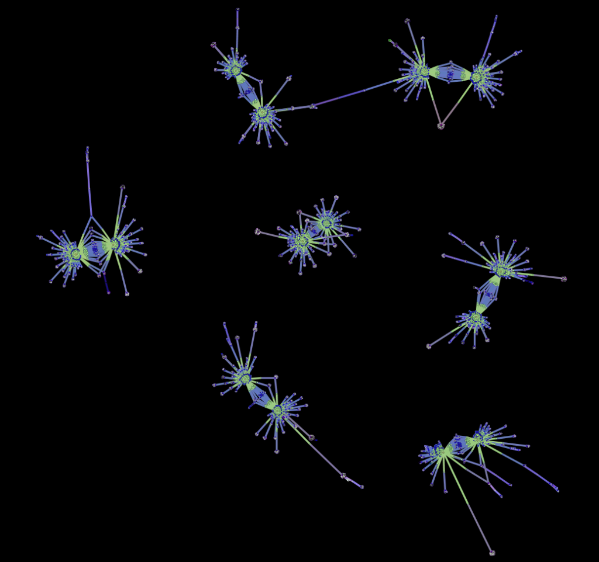
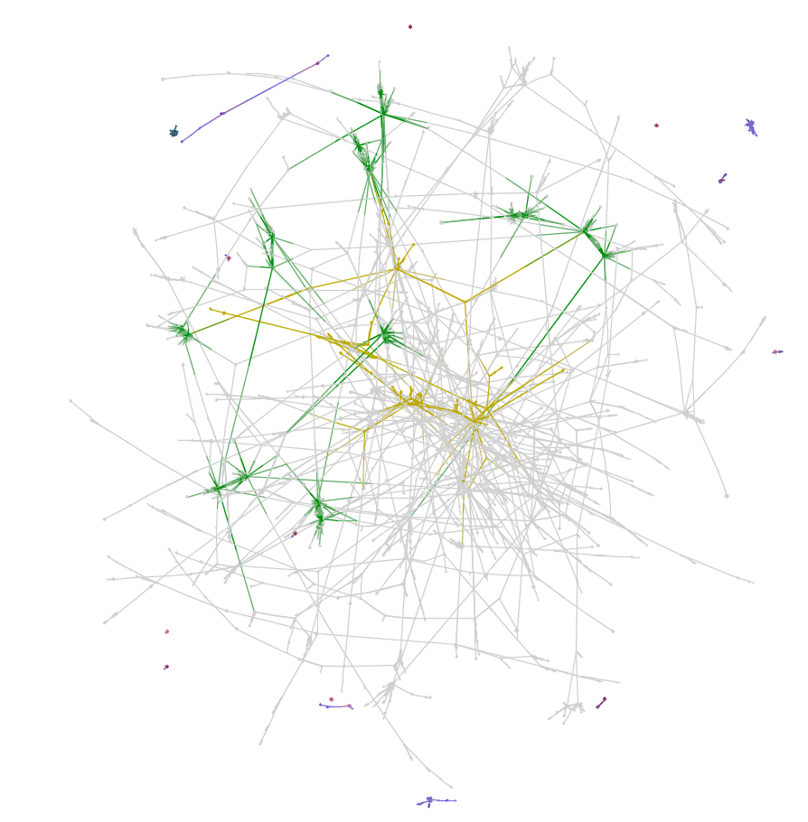
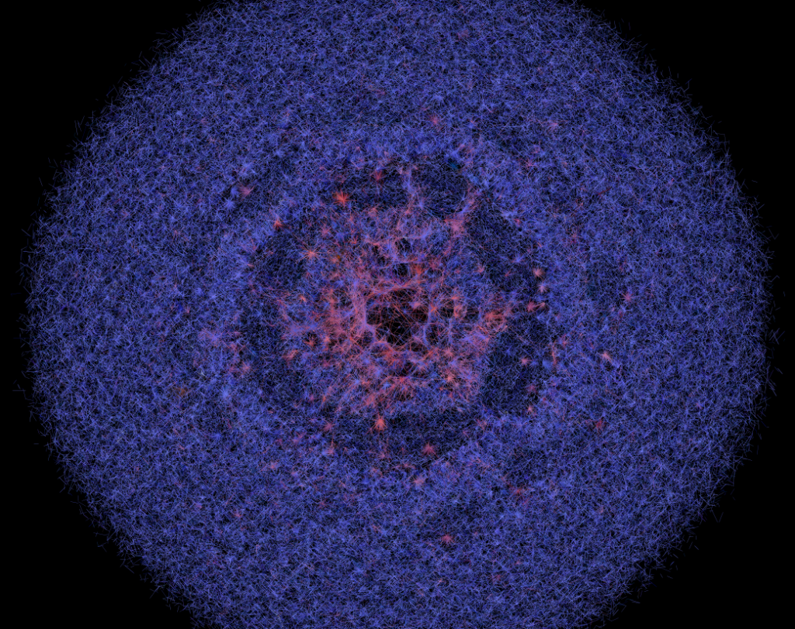
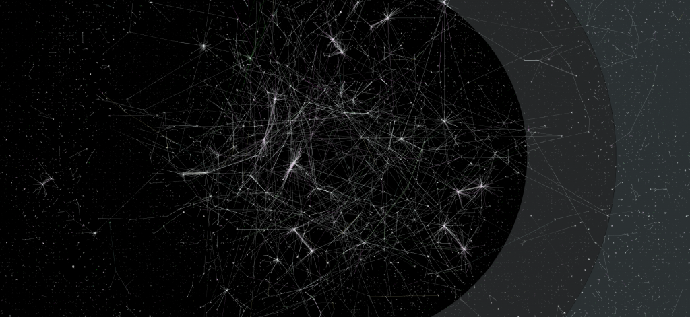
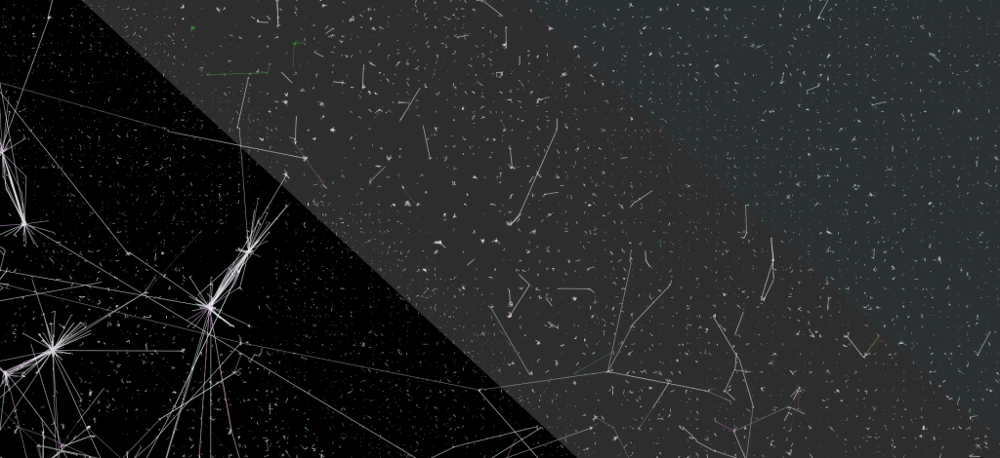

Updated to include a legend, as per advice from Scott Weingart.


How tweets and users are connected and visualized.











Keep in mind a fundamental difference here is that the latter has sent no tweets out using one of the studied hashtags and so is a connection only of incoming tweets, some imploring, some informational, some obviously just name-dropping. Stepping back from this single, albeit large, component, we can look at the entire network to try to get some understanding of this particular information ecosystem. 


At this scale, the microorganism is no longer a useful analogy, and instead we have to focus on vastly dissimilar scale entities: the galaxy or interstellar cloud.




This is the, remember, the structure of tweets related to a set of hashtags, considering connections based on a single rule. It could be that many of those Twitter users out in the periphery according to this view are actually highly connected by tweets outside the hashtags collected here. But with Twitter producing over 100 million tweets a day, the idea of capturing and visualizing and studying a network at that scale would be such an endeavor as to be practically impossible. Another possibility is to draw the network according to different rules, such as making connections based on retweets. This is a traditional method of visualization of Twitter networks (if anything like this could be considered traditional) but it tends to overemphasize connectedness to the point that there are no interesting substructures, just pulses of important news traveling user-to-user.
The old dig against Twitter is that it is merely a place to broadcast. “I’m eating a turkey sandwich.” “I can’t believe there’s no parking at SFO.” “I’m a winner, buy this hairspray.” Frankly, I cannot comprehend what Twitter is for. The sheer quantity of material, even for three days on one topic, is enormous. The messages are dominated by recycling earlier messages and by a pervasive element of spamming–both malicious and well-intentioned. Many users send of dozens of tweets with little response, whereas others are only recipients and seem not to engage at all. There are arguments and conversations within this network, but they are extremely rare. Again, it may be because of the method in which the network was created, given that responses and conversation may happen more naturally without hashtags, but I intuit that the texture of the network as represented here holds true for the service as a whole.
In examining this network I made a huge number of visualizations using Gephi. If you’d like to see some of them, they’re here.